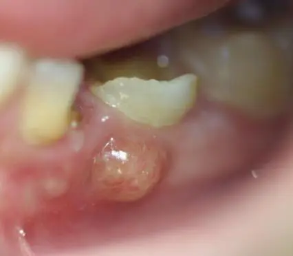
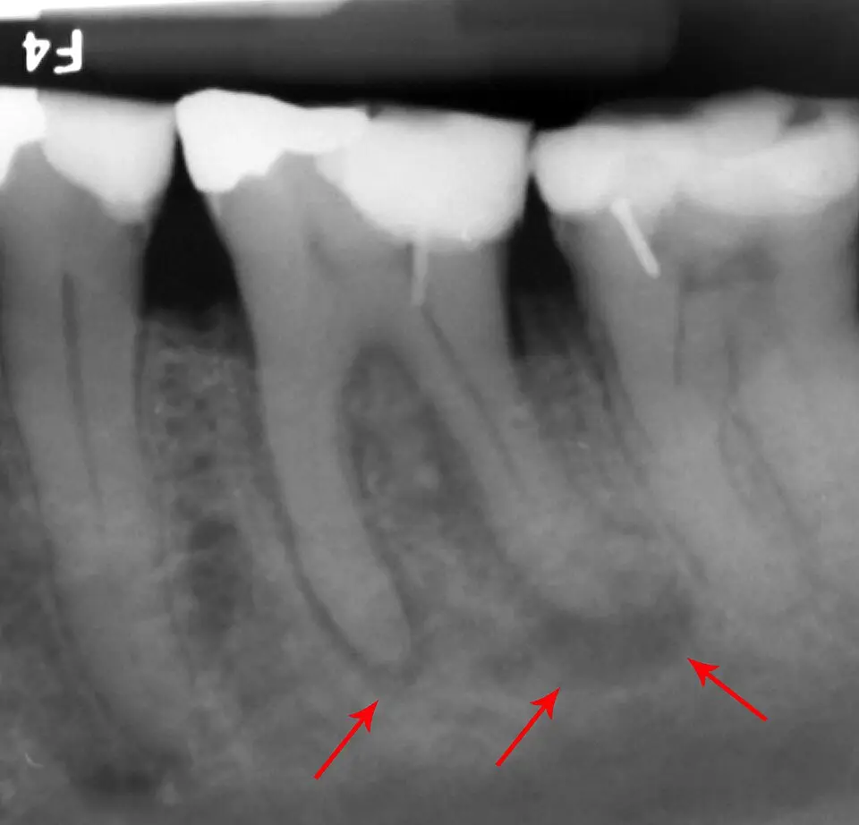

DX.9 — Abcès dentoalvéolaire
L'abcès dentoalvéolaire fait mal à la dent et parfois à l'oreille, qui reste normale à l'otoscopieS3S5. Le drainage par le dentiste le guérit, l'antibiotique ne servant qu'en cas de diffusion, et le trismus ou la dysphagie imposent l'hôpitalS2.
1. Définition
L'abcès dentoalvéolaire, appelé aussi abcès apical ou parodontite apicale, est une collection de pus située au contact de la racine d'une dent infectéeS3S2.
2. Épidémiologie (Suisse, puis Europe)
Aucune incidence suisse de l'abcès dentoalvéolaire ne figure dans les sources lues ; une enquête romande décrit en revanche la pratique des dentistesS1. En France, les consultations pour un motif buccodentaire représentent un ou deux actes par mois en médecine générale, selon l'observatoire de 2009S3. Les chiffres utiles réunissent ces données, et le poids des antibiotiques explique pourquoi la prescription dentaire intéresse la santé publique suisse.
Chiffres utiles : Suisse, puis Europe
| Donnée | Valeur | Population et année | Source |
|---|---|---|---|
| Questionnaires envoyés | 331 dentistes | Suisse romande, enquête publiée en 2023 | S1 |
| Taux de réponse | 28 % | Suisse romande, 2023 | S1 |
| Abcès avec symptômes généraux comme indication d'antibiotique | 89 % des répondants | Suisse romande, 2023 | S1 |
| Cellulite comme indication d'antibiotique | 81,5 % des répondants | Suisse romande, 2023 | S1 |
| Clindamycine prescrite surtout en cas d'allergie à la pénicilline | 87 % des répondants | Suisse romande, 2023 | S1 |
| Souhait de recommandations spécifiques | 76,1 % des répondants | Suisse romande, 2023 | S1 |
| Consultations buccodentaires en médecine générale | Un ou deux actes par mois | France, observatoire de 2009 | S3 |
La sixième ligne montre qu'aucune recommandation suisse dédiée ne s'impose aux dentistes romands, ce qui justifie le recours aux textes écossais et françaisS1S2S3. Le médecin de premier recours retient surtout la troisième ligne, car les signes généraux restent l'indication majeure de l'antibiotiqueS1S2.
Poids des antibiotiques prescrits par les dentistes
| Constat | Valeur | Source |
|---|---|---|
| Part mondiale des antibiotiques prescrits par les dentistes | Environ 10 % | S1 |
| Antibiotiques jugés inutiles pour une affection dentaire aiguë, étude de 2018 citée | 80 % | S1 |
| Prescriptions dentaires inadaptées en choix, durée ou dose, enquêtes citées | 14 % des cas | S1 |
| Consommation suisse d'antibiotiques | Parmi les plus faibles d'Europe, avec des variations cantonales | S1 |
L'enquête romande rappelle que la plupart des infections dentaires guérissent par un geste dentaire, sans antibiotique d'appointS1. Ce constat fonde la règle centrale du cours : drainer et supprimer la cause avant de penser à l'antibiotiqueS2.
3. Physiopathologie
La pulpe dentaire, vascularisée et innervée, provoque la douleur lorsqu'elle s'enflamme ou se nécrose ; l'infection gagne ensuite l'apex de la racineS3. Le schéma de la dent situe ces structures, la flore en cause guide le choix de l'antibiotique, et la projection vers l'oreille explique l'otalgie.
Base à connaître : la dent et son parodonte
Anatomie d'une molaire. Ce schéma de Blausen Medical montre en couleurs la couronne, la pulpe, les canaux radiculaires, l'apex et l'os alvéolaire où naît l'abcèsS6.

Le lecteur repère d'abord seul, sur le schéma brut, la pulpe, le canal, l'apex et l'os, puis il ouvre la copie annotéeS6.
La copie annotée porte cinq repères numérotés, qui suivent le trajet de l'infection de la pulpe vers l'osS6.
- 1. Pulpe : vascularisée et innervée, elle produit la douleur lorsqu'elle s'enflamme ou se nécroseS3.
- 2. Canal radiculaire : la nécrose pulpaire atteint par ce canal la pointe de la racineS3S6.
- 3. Apex : la collection se forme à son contact, d'où le nom d'abcès apicalS3.
- 4. Os alvéolaire : il appartient au parodonte, qui peut lui-même s'infecterS3.
- 5. Gencive : l'abcès s'y palpe à environ 1 cm de la jonction avec la dentS3.
- Une douleur provoquée par le froid ou le sucre vient de la pulpe encore vivante, non d'un abcèsS3.
Ce que l'image décide. La lecture montre que l'infection quitte la dent par l'apex, ce qui explique la douleur à la percussion et la tuméfaction gingivaleS3.

| Structure | Rôle | Conséquence clinique | Source |
|---|---|---|---|
| Couronne, collet, racine | La couronne est visible, la racine s'ancre dans l'os alvéolaire | Une couronne délabrée ou restaurée oriente vers l'abcès | S3 |
| Pulpe | Tissu vascularisé et innervé | Pulpite puis nécrose | S3 |
| Parodonte (gencive, cément, os alvéolaire) | Tissu de soutien | Siège des abcès parodontaux et des péricoronarites | S3 |
| Troisième molaire | Éruption tardive et partielle | Péricoronarite du jeune adulte | S3 |
Flore en cause et réponse de l'organisme
| Élément | Contenu | Conséquence | Source |
|---|---|---|---|
| Flore | Polymicrobienne, souvent streptocoques viridans ou bactéries à Gram négatif | Pénicilline V ou amoxicilline efficaces | S2 |
| Infection limitée aux tissus périradiculaires | Le système immunitaire la contrôle | Antibiotique inutile | S2 |
| Collection isolée de la circulation | Très faible pénétration de l'antibiotique | Le drainage seul agit | S2 |
| Diffusion (tuméfaction, cellulite, ganglions) | L'immunité ne suffit plus | Antibiotique indiqué | S2 |
| Atteinte générale (fièvre, malaise) | Infection systémique | Antibiotique indiqué | S2 |
Le Scottish Dental Clinical Effectiveness Programme (SDCEP) ajoute que le spectre plus large de l'amoxicilline favorise davantage l'émergence de résistances que la pénicilline VS2. Une revue clinique allemande indique que l'infection des espaces profonds du cou peut descendre vers le médiastin, car les fascias cervicaux sont verticauxS4.
Pourquoi une dent fait mal à l'oreille
| Constat | Contenu | Source |
|---|---|---|
| Innervation de l'oreille | Très étendue, d'où des causes d'otalgie référée nombreuses | S5 |
| Fréquence | L'otalgie référée est courante | S5 |
| Conduite | Traiter la cause sous-jacente, après un examen structuré | S5 |
| Territoire dentaire | L'une des trois régions à examiner quand l'oreille est normale | S3 |
La revue de 2023 juge les preuves de faible qualité, car ses 44 articles sont surtout des séries de casS5. La Phase A en tire la règle pratique : devant une oreille normale, le médecin examine la mâchoire, les dents et le pharynxS5.
4. Démarche diagnostique
La démarche commence par la recherche des signes de gravité, puis distingue l'origine infectieuse ou non de la douleur dentaireS3S2. Les étapes de la démarche ordonnent l'examen, et l'algorithme d'orientation sépare l'abcès des autres urgences dentaires.
Étapes de la démarche
| Étape | Question | Geste | Source |
|---|---|---|---|
| 1. Gravité | Trismus, tuméfaction du plancher buccal, gêne respiratoire ou à la déglutition ? | Transfert hospitalier immédiat si oui | S2 |
| 2. Signes généraux | Température inférieure à 36 °C ou supérieure à 38 °C, malaise ? | Mesurer la température | S2 |
| 3. Oreille | Le conduit et le tympan sont-ils normaux ? | Otoscopie : une oreille normale oriente vers une douleur référée | S5S3 |
| 4. Dent causale | Quelle dent fait mal à la percussion et à la mastication ? | Miroir, sonde ou manche du miroir, lampe frontale | S3 |
| 5. Type d'urgence | Cellulite, péricoronarite, abcès apical, pulpite ou carie ? | Algorithme d'orientation | S3 |
| 6. Accès au dentiste | Un dentiste peut-il voir le patient dans les 24 heures ? | Drainage et suppression de la cause | S3S2 |
L'absence de fièvre n'interdit pas l'antibiotique lorsque d'autres signes de diffusion ou d'atteinte générale existentS2. Le médecin précise dans le dossier le diagnostic, la température, le pouls et la tension artérielle avant tout transfert, comme le demande le SDCEPS2.
Algorithme d'orientation devant une douleur dentaire
| Question | Réponse | Diagnostic | Source |
|---|---|---|---|
| Le visage est-il tuméfié ? | Oui | Cellulite d'origine dentaire | S3 |
| Adulte jeune avec douleur d'une dent de sagesse ? | Oui, avec ou sans trismus, pus à la pression | Péricoronarite | S3 |
| La douleur est-elle provoquée par le froid ou le sucre ? | Oui, provoquée, jamais spontanée | Carie | S3 |
| La douleur est-elle très intense, continue, spontanée, sans dent localisable ? | Oui | Pulpite aiguë | S3 |
| La douleur augmente-t-elle à la mastication et à la percussion d'une dent localisée ? | Oui, sensation de « dent longue » | Abcès apical | S3 |
La fiche française rappelle que la plupart des urgences dentaires ne sont pas infectieuses, si bien que l'antibiotique n'y a pas sa placeS3.
5. Anamnèse ciblée et drapeaux rouges
L'anamnèse précise le siège et le caractère de la douleur, puis cherche les signes de diffusion qui changent le lieu de soinsS3S2. Les questions ciblées guident l'entretien, et les drapeaux rouges imposent le transfert hospitalier.
Questions ciblées et réponses attendues
| Question | Réponse qui oriente | Interprétation | Source |
|---|---|---|---|
| La dent fait-elle mal quand vous mâchez ou la tapotez ? | Oui, douleur continue et intense | Abcès apical | S3 |
| Avez-vous l'impression que la dent est trop longue ? | Oui | Abcès apical | S3 |
| Cette dent a-t-elle été soignée ou est-elle cariée ? | Dent délabrée ou restaurée | Terrain de l'abcès | S3 |
| La douleur vient-elle avec le froid ou le sucre ? | Oui | Carie ou pulpite, sans abcès | S3 |
| La joue ou le cou ont-ils gonflé ? | Oui | Cellulite : chercher les signes de gravité | S3S2 |
| Pouvez-vous ouvrir la bouche, avaler, respirer normalement ? | Non | Infection grave des espaces profonds | S2S4 |
| Avez-vous de la fièvre, des frissons, un malaise ? | Oui | Atteinte générale, antibiotique indiqué | S2 |
| Êtes-vous immunodéprimé ? | Oui | Toute inquiétude clinique justifie le transfert | S2 |
| Avez-vous une allergie à la pénicilline ? | Oui | Clindamycine comme alternative usuelle en Suisse romande | S1 |
La question sur l'oreille complète l'entretien, car le patient décrit parfois une otalgie alors que la dent est la vraie sourceS5.
Drapeaux rouges et conduite immédiate
| Drapeau rouge | Hypothèse | Conduite | Source |
|---|---|---|---|
| Trismus important | Infection sévère diffusée | Transfert hospitalier en urgence | S2 |
| Tuméfaction du plancher buccal | Angine de Ludwig possible | Ambulance si les voies aériennes sont menacées | S2 |
| Difficulté à respirer ou à avaler | Atteinte des espaces profonds | Transfert hospitalier en urgence | S2 |
| Tuméfaction de la région orbitaire | Cellulite grave | Hospitalisation indispensable | S3 |
| Crépitation neigeuse à la palpation | Cellulite grave, gaz dans les tissus | Hospitalisation indispensable | S3 |
| Dysphonie | Cellulite grave | Hospitalisation indispensable | S3 |
| Torticolis, signes de sepsis | Abcès cervical, fasciite nécrosante, syndrome de Lemierre | Urgence d'oto-rhino-laryngologie (ORL), drainage chirurgical | S4 |
| Cellulite qui s'étend rapidement | Diffusion | Transfert hospitalier en urgence | S2 |
Le SDCEP place aussi dans cette catégorie toute inquiétude clinique chez un patient immunodéprimé, même sans signe spectaculaireS2. Le syndrome de Lemierre associe fusobactéries, sepsis et thrombose de la veine jugulaire interne selon la revue allemandeS4.
6. Examen physique ciblé, région par région
L'examen suit cinq régions, du visage au cou, et chaque région possède sa fenêtreS3S2S4. Le médecin inspecte d'abord le visage, puis il examine la cavité buccale et la dent, l'oreille, le cou et l'état général.
Région 1 — Visage
| Signe | Signification | Source |
|---|---|---|
| Œdème de la joue ou du visage | Cellulite d'origine dentaire | S3 |
| Signes inflammatoires discrets au début | Ils manquent parfois pendant les premières heures | S3 |
| Tuméfaction extra-orale, œil qui se ferme | Infection sévère | S2 |
| Tuméfaction de la région orbitaire | Signe de gravité, hospitalisation | S3 |
Le SDCEP laisse au jugement clinique la qualification d'infection sévère, ce qui impose de revoir le patient lorsque le doute persisteS2.
Région 2 — Cavité buccale et dent causale
| Signe | Signification | Source |
|---|---|---|
| Dent délabrée ou restaurée, douloureuse à la percussion | Dent causale de l'abcès apical | S3 |
| Collection palpée ou visible à environ 1 cm de la jonction dent-gencive | Abcès apical | S3 |
| Écoulement purulent au niveau de la racine ou du sillon gingival | Drainage spontané | S3 |
| Capuchon gingival inflammatoire sur une dent de sagesse | Péricoronarite | S3 |
| Trismus | Péricoronarite ou infection sévère | S3S2 |
| Plancher buccal tuméfié | Infection des espaces profonds | S2 |
Le miroir buccal écarte les joues et éclaire les zones sombres, tandis que la sonde ou le manche du miroir percute les dents une à uneS3.
Abcès parulique de la gencive. Cette photographie clinique en couleurs montre une tuméfaction gingivale arrondie sous une dent, typique de l'abcès qui se collecte dans la genciveS7.

Le lecteur cherche d'abord seul, sur la photographie brute, la tuméfaction et la dent causale, puis il ouvre la copie annotéeS7.
La copie annotée porte deux repères numérotés, qui séparent la collection de la dent voisineS7.
- Une gencive tuméfiée sans signe général ne justifie pas, à elle seule, un antibiotiqueS2.
Ce que l'image décide. Une tuméfaction gingivale fluctuante sous une dent douloureuse confirme la collection et réclame un drainage par le dentisteS2S3.

Région 3 — Oreille
| Signe | Signification | Source |
|---|---|---|
| Conduit et tympan normaux avec otalgie | Otalgie référée, chercher la dent ou la mâchoire | S5S3 |
| Tympan rouge et bombé | Otite moyenne, autre diagnostic | S4 |
| Conduit douloureux à la pression du tragus | Otite externe, autre diagnostic | S4 |
Une otoscopie normale ne rassure donc pas, puisqu'elle oriente vers les territoires qui projettent leur douleur dans l'oreilleS5.
Région 4 — Cou
| Signe | Signification | Source |
|---|---|---|
| Ganglions cervicaux réactionnels | Diffusion de l'infection, antibiotique indiqué | S2 |
| Douleur, rougeur, tuméfaction cervicale, mobilité limitée | Abcès cervical | S4 |
| Torticolis | Drapeau rouge de l'abcès cervical | S4 |
| Tuméfaction rapidement extensive | Cellulite diffusante, urgence | S2 |
Le cou se palpe toujours, car un abcès dentaire peut gagner les espaces cervicaux et, au-delà, le médiastinS4.
Région 5 — État général et constantes
| Paramètre | Seuil ou signe | Interprétation | Source |
|---|---|---|---|
| Température | Inférieure à 36 °C ou supérieure à 38 °C | Atteinte générale | S2 |
| Pouls et tension artérielle | Mesurés et consignés | Base du transfert si gravité | S2 |
| Saturation, dyspnée, stridor | Gêne respiratoire | Voies aériennes menacées | S2S4 |
| Malaise, fièvre | Présents | Antibiotique indiqué | S2 |
La fiche française évalue la gravité d'abord sur les constantes vitales, puis sur les signes locaux de diffusionS3.
7. Approche syndromique
L'abcès dentoalvéolaire appartient au syndrome d'otalgie référée à oreille normale, aux côtés du trouble temporo-mandibulaire et du carcinome oropharyngéS5S3. Le tableau syndromique classe les urgences dentaires, et les diagnostics voisins du lot renvoient vers les autres cours.
Urgences dentaires infectieuses et non infectieuses
| Syndrome | Signes | Antibiotique | Source |
|---|---|---|---|
| Abcès apical | Douleur continue, percussion et mastication douloureuses, collection gingivale | Non si drainage rapide | S3S2 |
| Cellulite d'origine dentaire | Œdème de la joue ou du visage | Oui, ou hospitalisation si gravité | S3 |
| Péricoronarite | Dent de sagesse, capuchon inflammatoire, trismus possible | Oui selon la fiche française | S3 |
| Pulpite aiguë | Douleur très intense, spontanée, insomniante | Non | S3 |
| Carie | Douleur provoquée, jamais spontanée | Non | S3 |
| Alvéolite suppurée | Suites d'une extraction | Hors du champ de la fiche | S3 |
La pulpite aiguë réclame une consultation dentaire dès que possible pour l'antalgie, car les antalgiques de palier 2 ne suffisent pasS3.
Diagnostics voisins du lot de l'otalgie
| Diagnostic | Ce qui le distingue | Lien |
|---|---|---|
| Carcinome épidermoïde oropharyngé | Otalgie avec oreille normale depuis plus de 3 semaines, dysphagie, masse cervicale | DX.10 |
| Trouble temporo-mandibulaire douloureux | Douleur à la mastication sans dent causale, craquement articulaire | DX.8 |
| Otite moyenne aiguë | Tympan rouge et bombé | DX.2 |
| Otite externe aiguë | Douleur au tragus, conduit œdémateux | DX.1 |
La revue de 2023 retient surtout le trouble temporo-mandibulaire, le syndrome d'Eagle et les névralgies parmi les causes d'otalgie référée étudiéesS5.
8. Diagnostic positif et critères
Le diagnostic positif reste clinique : une dent localisée, douloureuse à la percussion, avec une collection en regard de sa racineS3. Les critères diagnostiques se vérifient un par un, et la grille de gravité classe l'abcès en local, diffusé ou grave.
Critères du diagnostic positif
| Critère | Contenu | Source |
|---|---|---|
| Dent causale | Délabrée ou restaurée, aisément localisée | S3 |
| Douleur | Continue et intense, majorée par la percussion et la mastication | S3 |
| Sensation | Dent « longue » | S3 |
| Collection | Visible ou palpable à environ 1 cm de la jonction dent-gencive | S3 |
| Éventuel écoulement | Pus au niveau de la racine | S3 |
La présence d'un critère de gravité ne remet pas le diagnostic en cause ; elle change le lieu de soins et le traitementS2S3.
Grille de gravité
| Niveau | Signes | Conduite | Source |
|---|---|---|---|
| Abcès localisé | Infection limitée aux tissus périradiculaires, sans signe général | Drainage et suppression de la cause, sans antibiotique | S2 |
| Abcès diffusé ou systémique | Tuméfaction, cellulite, ganglions, fièvre, malaise | Drainage et antibiotique de 3 à 5 jours | S2 |
| Infection sévère | Tuméfaction extra-orale, œil fermé, trismus | Jugement clinique, souvent hôpital | S2 |
| Urgence vitale | Voies aériennes menacées, angine de Ludwig, sepsis | Ambulance et réanimation | S2 |
Le SDCEP fixe la durée de 3 à 5 jours selon la gravité et la réponse clinique, puis arrête l'antibiotique dès la disparition des signes générauxS2.
9. Examens complémentaires
Aucun examen complémentaire n'est nécessaire pour l'abcès localisé ; la température suffit à juger l'atteinte généraleS2S3. Le tableau des examens ciblés fixe leurs indications, et l'interprétation chiffrée rassemble les seuils utiles.
Examens ciblés et indications
| Examen | Indication | Ce qu'il cherche | Source |
|---|---|---|---|
| Température | Toute infection bactérienne suspectée | Atteinte générale | S2 |
| Pouls et tension artérielle | Avant tout transfert | Sepsis, base de comparaison | S2 |
| Radiographie rétroalvéolaire | Par le dentiste, pour localiser la dent | Clarté périapicale | S8 |
| Échographie ou tomodensitométrie | Abcès cervical suspecté | Planification chirurgicale selon le site | S4 |
| Culture et antibiogramme | Drainage chirurgical d'un abcès cervical | Adaptation de l'antibiotique | S4 |
Radiographie rétroalvéolaire d'une dent abcédée. Cette radiographie en niveaux de gris montre une molaire inférieure restaurée et une clarté osseuse autour de la pointe de ses deux racinesS8.

Le lecteur cherche d'abord seul, sur la radiographie brute, les zones sombres au bout des racines, puis il ouvre la copie annotéeS8.
La copie annotée porte trois repères numérotés, deux aux apex et un sur la couronneS8.
Ce que l'image décide. La clarté périapicale situe l'infection à la pointe de la racine, ce qui oriente le dentiste vers la dent à traiterS8S3.

La revue allemande adapte l'antibiotique intraveineux initial selon la culture et l'antibiogramme obtenus au drainageS4.
Interprétation chiffrée
| Valeur | Seuil | Interprétation | Source |
|---|---|---|---|
| Température | Inférieure à 36 °C ou supérieure à 38 °C | Atteinte générale | S2 |
| Distance de la collection | Environ 1 cm de la jonction dent-gencive | Siège typique de l'abcès apical | S3 |
| Délai d'accès au dentiste | 24 heures | Drainage possible, antibiotique inutile | S3 |
| Durée de l'antibiotique | 3 à 5 jours | Selon la gravité et la réponse | S2 |
| Réévaluation | Idéalement à 3 jours (SDCEP), à 48 heures (fiche française) | Arrêt si les signes généraux ont disparu | S2S3 |
Les deux délais de réévaluation diffèrent ; le médecin peut retenir le plus court, ce qui respecte les deux textes par déductionS2S3.
10. Arbre décisionnel
L'arbre décisionnel se lit de haut en bas et place la recherche des signes de gravité avant toute prescriptionS2S3. Il reprend la logique commune au SDCEP et à la fiche française : drainer d'abord, n'ajouter l'antibiotique qu'en cas de diffusionS2S3.
Arbre décisionnel de l'abcès dentoalvéolaire
- Si les voies aériennes sont menacées ou si un sepsis existe, alors le médecin appelle une ambulance et débute les gestes d'urgenceS2.
- Si un trismus important, une tuméfaction du plancher buccal, une dysphagie ou une dyspnée apparaissent, alors il transfère le patient à l'hôpital en urgenceS2.
- Si la tuméfaction gagne l'orbite ou si la palpation crépite, alors l'hospitalisation devient indispensableS3.
- Si l'oreille est normale et qu'une dent localisée fait mal à la percussion, alors il retient un abcès apicalS3S5.
- Si un dentiste peut voir le patient dans les 24 heures, alors l'abcès est drainé sans antibiotiqueS3.
- Si le drainage immédiat est impossible, ou si une diffusion ou une atteinte générale existent, alors il prescrit un antibiotiqueS2.
- Si du pus s'écoule déjà au sillon gingival, alors le drainage spontané permet de se passer d'antibiotiqueS3.
- Si les signes généraux ont disparu à la réévaluation, alors il arrête l'antibiotiqueS2.
- Si le patient ne répond pas à l'antibiotique, alors il revoit le diagnostic et adresse au spécialisteS2.
Le patient reçoit aussi une consigne de sécurité : il recontacte le cabinet si les symptômes s'aggravent vite, ne s'améliorent pas ou changentS2.
11. Prise en charge selon les recommandations suisses
11.A But : le traitement draine la collection, supprime la cause dentaire et soulage la douleur, en réservant l'antibiotique aux infections qui diffusentS2S3. Il vise aussi à limiter les résistances, puisque l'enquête romande rappelle le poids des prescriptions dentaires dans la consommation d'antibiotiquesS1. La conduite chronologique organise la consultation, et le volet urgence décrit la filière hospitalière.
Conduite chronologique en cabinet
| Moment | Geste | Raison | Source |
|---|---|---|---|
| Consultation | Chercher les drapeaux rouges, mesurer la température | Ils décident du lieu de soins | S2 |
| Même jour | Organiser un rendez-vous dentaire dans les 24 heures | Le drainage rend l'antibiotique inutile | S3 |
| Même jour | Conseiller une antalgie optimale | La douleur est continue et intense | S2S3 |
| Si drainage impossible ou diffusion | Antibiotique, raison notée dans le dossier | Traçabilité exigée par le SDCEP | S2 |
| 48 heures à 3 jours | Réévaluer le patient | Arrêt si signes généraux disparus | S3S2 |
| Semaines suivantes | Consultation dentaire non urgente | Supprimer le foyer et prévenir la récidive | S3 |
Urgence — infection grave des espaces profonds
| Délai | Geste | Source |
|---|---|---|
| Minute 0 | Voies aériennes menacées, angine de Ludwig, sepsis : ambulance et gestes de survie | S2 |
| Avant le transfert | Noter diagnostic, température, pouls et tension artérielle | S2 |
| À l'hôpital | Imagerie selon le site, échographie ou tomodensitométrie | S4 |
| À l'hôpital | Décompression chirurgicale puis drainage, souvent pendant plusieurs jours | S4 |
| À l'hôpital | Antibiotique intraveineux à large spectre, par exemple ampicilline-sulbactam ou clindamycine, adapté ensuite à la culture | S4 |
| Après la phase aiguë | Éradiquer le foyer dentaire détecté | S4S3 |
La revue allemande précise que l'évacuation de l'abcès reste le but du traitement, même lorsque l'antibiotique intraveineux est débutéS4. Le médecin de premier recours ne retarde donc jamais le transfert pour une première dose orale d'antibiotique, ce qui relève d'une déductionS4S2.
11.B Moyens : Aucune recommandation d’une société suisse sur l’abcès dentaire n’a été lue, point à vérifier ; le schéma suit donc la recommandation écossaise SDCEP, source européenne expliciteS2. Une revue zurichoise place la co-amoxicilline en premier choix, sans contre-indication, une fois la cause de l’inflammation traitéeS15. Ensuite, le schéma structuré donne molécule, dose de l'information professionnelle (AIPS), durée, contrôle et critère d'échecS2S9S10S11. Les fiches AIPS détaillent l'amoxicilline, l'amoxicilline avec acide clavulanique, la clindamycine, le métronidazole, le paracétamol et l'ibuprofène.
Schéma thérapeutique structuré
| Situation | Molécule et dose | Durée | Contrôle | Critère d'échec |
|---|---|---|---|---|
| Abcès localisé, dentiste disponible | Aucun antibiotique ; drainage et suppression de la causeS2S3 | — | Consultation dentaireS3 | Diffusion ou signes générauxS2 |
| Diffusion ou atteinte générale, adulte de plus de 40 kg | Amoxicilline, 375 à 750 mg 3 à 4 fois par jour selon l'AIPSS9 | 3 à 5 jours selon le SDCEPS2 ; l'AIPS demande de poursuivre 48 à 72 heures après l'effet cliniqueS9 | Réévaluation à 48 heures ou 3 joursS3S2 | Absence de réponse : revoir le diagnosticS2 |
| Diffusion, enfant jusqu'à 40 kg | Amoxicilline, 50 à 100 mg/kg/jour en 3 à 4 prises selon l'AIPSS9 | 3 à 5 jours selon le SDCEPS2 | Réévaluation cliniqueS2 | Absence de réponseS2 |
| Germes producteurs de bêta-lactamase suspectés, adulte | Amoxicilline et acide clavulanique, 3 × 625 mg par jour selon l'AIPSS10 | Selon la réponse cliniqueS2 | Réévaluation cliniqueS2 | Ictère ou atteinte hépatique : arrêtS10 |
| Allergie aux pénicillines, adulte | Clindamycine orale, 600 à 1200 mg par jour en 3 ou 4 prises selon l'AIPSS11 | 3 à 5 jours selon le SDCEPS2 | Réévaluation cliniqueS2 | Diarrhée ou réaction cutanée sévère : arrêtS11 |
| Anaérobies suspectés, en association | Métronidazole, 3 × 500 mg par jour, associé à un agent actif sur les aérobies selon l'AIPSS12 | Selon la réponse cliniqueS2 | Réévaluation cliniqueS2 | Absence de réponseS2 |
| Douleur, adulte | Paracétamol, au plus 4 g par jour, ou ibuprofène, au plus 2400 mg par jour selon les AIPSS13S14 | Durée la plus courte possibleS13 | Réévaluation avec l'antibiotiqueS2 | Douleur qui s'aggrave malgré l'antalgieS2 |
La fiche française propose un autre schéma d'amoxicilline pendant sept jours, qui diverge de l'AIPS suisse ; le cours retient la dose de l'AIPSS3S9. La clindamycine reste l'alternative la plus prescrite par les dentistes romands en cas d'allergie à la pénicilline, selon 87 % des répondantsS1.
Amoxicilline — Amoxi-Mepha (n° 44911)
| Rubrique | Contenu de l'AIPS |
|---|---|
| Indication | L'AIPS couvre les infections dues aux germes sensibles, notamment de la sphère ORL ; elle ne nomme pas l'abcès dentaireS9. |
| Dose AIPS adulte | Au-delà de 40 kg, 375 à 750 mg 3 à 4 fois par jour, soit 1500 mg – 3000 mg par jour dans les infections légères à moyennesS9. |
| Dose AIPS enfant | Jusqu'à 40 kg inclus, 50 à 100 mg/kg/jour, répartis en 3 à 4 prisesS9. |
| Contre-indications | « Amoxi-Mepha ne doit pas être administré aux patients présentant une hypersensibilité aux pénicillines ou aux céphalosporines. »S9 |
| Grossesse | « La prudence est donc de rigueur lors de l'emploi d'Amoxi-Mepha au cours de la grossesse. »S9 |
| Allaitement | « La substance ne doit donc pas être administrée pendant la période d'allaitement ou, si nécessaire, il faut procéder au sevrage de l'enfant. »S9 |
L'AIPS signale un exanthème chez plus de 90 % des patients atteints de mononucléose infectieuse ou de leucémie lymphoïde traités par amoxicillineS9.
Amoxicilline et acide clavulanique — Co-Amoxi-Mepha (n° 53995)
| Rubrique | Contenu de l'AIPS |
|---|---|
| Indication | L'AIPS vise les germes sensibles, en particulier ceux qui produisent une bêta-lactamase, selon les recommandations localesS10. |
| Dose AIPS adulte | Au-delà de 40 kg, 3× 625 mg (500/125) par jour ; au besoin jusqu'à 3× 1 g (875/125) par jour au maximumS10. |
| Enfant | Les comprimés ne conviennent pas à l'enfant de moins de 40 kg ; l'AIPS renvoie à la suspensionS10. |
| Contre-indications | « Co-Amoxi-Mepha est contre-indiqué en cas d'hypersensibilité connue aux pénicillines et céphalosporines ou à un constituant de Co-Amoxi-Mepha, de même que chez les patients qui ont présenté un ictère ou des troubles de la fonction hépatique pendant un traitement antérieur par Co-Amoxi-Mepha. »S10 |
| Grossesse | « Co-Amoxi-Mepha ne devrait donc être utilisé pendant la grossesse qu'en cas de nécessité absolue. »S10 |
| Allaitement | « Il ne faudrait donc pas allaiter pendant le traitement par Co-Amoxi-Mepha. »S10 |
En cas d'insuffisance rénale, l'AIPS ralentit l'administration selon la clairance de la créatinine, car l'excrétion des deux substances diminueS10.
Clindamycine — Clindamycin-Mepha gélules (n° 62980)
| Rubrique | Contenu de l'AIPS |
|---|---|
| Indication | L'AIPS cite les infections de la peau et des tissus mous, dont la cellulite et l'abcès, dues aux germes sensiblesS11. |
| Dose AIPS adulte, voie orale | Infection moyenne ou sévère : 600 – 1200 mg par jour ; très sévère : 1200 – 1800 mg par jour, en 3 ou 4 prisesS11. |
| Prise | Gélules entières avec un grand verre d'eau, au moins 30 minutes avant le coucher, pour éviter une œsophagiteS11. |
| Contre-indications | « Hypersensibilité connue envers la clindamycine ou la lincomycine. »S11 |
| Grossesse | « La clindamycine ne doit être administrée pendant la grossesse qu'en cas de nécessité absolue. » ; « La prudence est de rigueur lors de l'utilisation de Clindamycin-Mepha/Clindamycin [Phosphat]-Mepha i.v./i.m. pendant la grossesse. »S11 |
| Allaitement | « L'administration orale ou parentérale de clindamycine n'est pas recommandée lors de l'allaitement. Si un traitement par la clindamycine est nécessaire, l'allaitement doit être arrêté. »S11 |
L'AIPS rapporte des réactions cutanées sévères sous clindamycine, dont le syndrome de Stevens-Johnson, qui imposent l'arrêt immédiat du traitementS11.
Métronidazole — Flagyl® (n° 26313)
| Rubrique | Contenu de l'AIPS |
|---|---|
| Indication | L'AIPS réserve le métronidazole aux infections où des bactéries anaérobies sont prouvées ou suspectéesS12. |
| Dose AIPS adulte | Infections à germes anaérobies : 3 x 1 comprimé pelliculé à 500 mg par jour, éventuellement associé à une substance active contre les aérobiesS12. |
| Spectre | Le métronidazole n'agit pas sur les aérobies, d'où une association dans les infections mixtesS12. |
| Contre-indications | « Hypersensibilité au métronidazole ou à l'égard des dérivés de l'imidazole ou à l'un des excipients selon la composition. »S12 |
| Grossesse | « L'utilisation durant le premier trimestre est contre-indiquée. Au cours des deuxième et troisième trimestres, le métronidazole ne doit être utilisé qu'en présence d'une indication stricte. »S12 |
| Allaitement | « L'allaitement est contre-indiqué pendant l'utilisation de Flagyl, et jusqu'à 24 heures après la dernière prise. »S12 |
Comme la flore de l'abcès dentaire est mixte, le métronidazole seul ne couvre pas les streptocoques viridans, ce qui relève d'une déductionS12S2.
Paracétamol — Paracetamol-Mepha 500 mg (n° 61402)
| Rubrique | Contenu de l'AIPS |
|---|---|
| Indication | L'AIPS nomme expressément les « maux de dents » parmi les douleurs légères à modérément fortesS13. |
| Dose AIPS adulte | Plus de 40 kg : 1-2 comprimés pelliculés à 500 mg selon le besoin, jusqu'à 8 comprimés, soit 4 g de paracétamol par jourS13. |
| Intervalle | L'AIPS impose 4 à 6 heures entre deux doses unitairesS13. |
| Contre-indications | « Hypersensibilité au paracétamol et aux substances apparentées (p.ex. propacétamol) ou à l'un des excipients selon la composition » ; « Hyperbilirubinémie constitutionnelle héréditaire (maladie de Gilbert) »S13. |
| Grossesse | « En cas de nécessité clinique, le paracétamol peut être pris ou utilisé pendant la grossesse. » ; l'AIPS demande toutefois la prudenceS13. |
| Allaitement | « Le paracétamol passe dans le lait maternel. » ; « la prudence est de mise lors de l'utilisation de Paracetamol-Mepha pendant l'allaitement »S13. |
Le médecin choisit le paracétamol en premier chez la femme enceinte, puisque l'ibuprofène devient contre-indiqué au troisième trimestre selon son AIPSS13S14.
Ibuprofène — Ibuprofen-Mepha Teva (n° 49156)
| Rubrique | Contenu de l'AIPS |
|---|---|
| Indication | L'AIPS mentionne les « Odontalgies et douleurs après interventions dentaires »S14. |
| Dose AIPS adulte | Dose simple de 400 mg, que l'on peut porter à 800 mg ; dose journalière maximale de 2400 mgS14. |
| Dose AIPS enfant | À partir de 6 ans, 20 mg/kg de poids corporel par jour, sans dépasser 500 mg sous 30 kgS14. |
| Contre-indications | « Tendance accrue aux saignements » ; « Troubles hépatiques fonctionnels graves (cirrhose du foie ou ascites) » ; « Insuffisance rénale grave (clairance de la créatinine <30 ml/min) »S14. |
| Grossesse | « L'ibuprofène est contre-indiqué au cours du troisième trimestre de la grossesse » ; la dose et la durée restent aussi faibles que possible aux deux premiers trimestresS14. |
| Allaitement | « Par prudence, l'ibuprofène ne doit donc pas être pris pendant l'allaitement. Si le traitement est indispensable, le nourrisson doit être sevré. »S14 |
L'ibuprofène porte une indication dentaire explicite dans son AIPS, ce qui en fait un antalgique logique de l'abcès hors grossesse avancéeS14.
11.C Surveillance : le plan de suivi fixe les contrôles, et les situations spéciales adaptent le traitement à la grossesse, à l'allaitement, à l'enfant et à l'allergieS2S3S9.
Plan de suivi
| Moment | Contrôle | Seuil d'action | Source |
|---|---|---|---|
| 48 heures à 3 jours | Signes généraux, tuméfaction, douleur | Signes disparus : arrêt de l'antibiotique | S3S2 |
| À tout moment | Aggravation rapide, absence d'amélioration, symptôme nouveau | Recontacter le cabinet | S2 |
| À tout moment | Trismus, dysphagie, dyspnée | Transfert hospitalier immédiat | S2 |
| Absence de réponse à l'antibiotique | Diagnostic | Avis spécialisé | S2 |
| Semaines suivantes | Soins dentaires du foyer | Prévenir la récidive | S3 |
Le SDCEP interdit de prolonger le traitement après la disparition des signes généraux, car cette prolongation favorise la résistance aux antibiotiquesS2.
Situations spéciales
| Situation | Conduite | Source |
|---|---|---|
| Grossesse | Amoxicilline avec prudence ; amoxicilline et acide clavulanique seulement en cas de nécessité absolue ; métronidazole contre-indiqué au premier trimestre | S9S10S12 |
| Allaitement | Amoxicilline, Co-Amoxi-Mepha et clindamycine déconseillés ou sevrage ; métronidazole contre-indiqué jusqu'à 24 heures après la dernière prise | S9S10S11S12 |
| Enfant | Amoxicilline selon le poids ; comprimés de Co-Amoxi-Mepha inadaptés sous 40 kg | S9S10 |
| Allergie aux pénicillines ou aux céphalosporines | Amoxicilline et Co-Amoxi-Mepha contre-indiqués ; clindamycine en alternative | S9S10S1 |
| Immunodépression | Toute inquiétude clinique justifie le transfert hospitalier | S2 |
Chez la femme qui allaite, le médecin discute donc le choix avec le dentiste, car presque tous les antibiotiques cités imposent prudence ou sevrage selon leurs AIPSS9S11.
11.D Pronostic : l'abcès localisé guérit par le drainage et la suppression de la cause, sans antibiotique, parce que l'immunité contrôle l'infection périradiculaireS2. Le pronostic s'assombrit lorsque l'infection gagne les espaces cervicaux, car le trajet vertical des fascias expose au médiastinS4. La récidive dépend des soins du foyer dentaire, que la fiche française prévoit à distance de l'épisode aiguS3.
12. Prévention
La majorité des urgences dentaires pourrait être évitée par une hygiène buccodentaire adaptée et régulière, selon la fiche française de 2025S3. Les conseils de prévention se transmettent au patient pendant la consultation, avant même le rendez-vous dentaire.
Conseils de prévention au patient
| Conseil | Détail | Source |
|---|---|---|
| Nettoyer entre les dents | Fil dentaire ou brossettes au moins une fois par jour, avant le brossage | S3 |
| Se brosser les dents | Deux fois par jour pendant deux minutes | S3 |
| Utiliser un dentifrice fluoré | Cracher sans rincer la bouche après le brossage | S3 |
| Éviter de grignoter | Entre les repas | S3 |
| Consulter le dentiste | Au minimum une fois par an | S3 |
| Entretenir une prothèse dentaire | Chaque jour, en vérifiant sa tolérance | S3 |
La prévention de l'antibiorésistance fait aussi partie du conseil, puisque l'enquête romande décrit des prescriptions encore empiriquesS1. Le médecin explique donc au patient pourquoi un abcès drainé ne réclame pas d'antibiotique, ce qui évite une demande inutileS2S3.
13. Points clés
- L'abcès apical siège sur une dent délabrée ou restaurée, douloureuse à la percussion, avec une collection gingivale en regard de sa racineS3.
- Devant une otalgie avec une oreille normale, le médecin recherche la cause dans les dents, la mâchoire et le pharynxS5S3.
- Le drainage et la suppression de la cause suffisent à l'abcès localisé ; l'antibiotique se réserve à la diffusion ou à l'atteinte généraleS2.
- Trismus, tuméfaction du plancher buccal, dysphagie ou dyspnée imposent le transfert hospitalier immédiatS2.
- L'antibiotique dure 3 à 5 jours, se réévalue vers le troisième jour et s'arrête dès la disparition des signes générauxS2.
14. Pièges et questions fréquentes à l'examen fédéral suisse
Les questions suivantes reprennent les erreurs de diagnostic, d'antibiothérapie et d'orientation les plus fréquentes ; la banque de questions donne la réponse et sa raison.
Pièges et questions d'examen
| Question | Réponse | Raison |
|---|---|---|
| Un patient a une otalgie avec conduit et tympan normaux : que faire ensuite ? | Examiner les dents, la mâchoire et le pharynx. | L'otalgie référée est fréquente (point 6)S5S3. |
| Un abcès localisé sans fièvre peut être drainé demain par le dentiste : faut-il un antibiotique ? | Non. | Le drainage suffit et l'antibiotique pénètre peu dans la collection (point 11)S2S3. |
| Quelle température signe une atteinte générale selon le SDCEP ? | Moins de 36 °C ou plus de 38 °C. | Ce seuil justifie l'antibiotique (point 9)S2. |
| Un patient a un trismus important et un plancher buccal tuméfié : que faire ? | Le transférer à l'hôpital en urgence. | Ce sont des signes d'infection grave des espaces profonds (point 5)S2. |
| Combien de temps dure l'antibiotique d'un abcès diffusé ? | Habituellement 3 à 5 jours. | On l'arrête dès la disparition des signes généraux (point 11)S2. |
| Quelle alternative les dentistes romands prescrivent-ils surtout en cas d'allergie à la pénicilline ? | La clindamycine. | L'enquête de 2023 la désigne ainsi (point 11)S1. |
| Une femme allaite et doit recevoir du métronidazole : que dit l'AIPS ? | L'allaitement est contre-indiqué jusqu'à 24 heures après la dernière prise. | L'AIPS de Flagyl le précise (point 11)S12. |
| La douleur dentaire n'apparaît qu'au froid et au sucre : abcès ? | Non, plutôt une carie. | La douleur provoquée, jamais spontanée, oriente vers la carie (point 4)S3. |
| Du pus s'écoule déjà au sillon gingival : l'antibiotique est-il utile ? | Non. | Le drainage spontané le rend inutile selon la fiche française (point 10)S3. |
| Le paracétamol est-il indiqué pour les maux de dents selon son AIPS ? | Oui. | L'AIPS de Paracetamol-Mepha nomme les maux de dents (point 11)S13. |
Sources
Les sources ont été lues le 13.11.2026 (Europe/Zurich) ; une source non européenne est signalée comme telle.
- [S1] Loume A, Gardelis P, Zekeridou A, Giannopoulou C. A survey on systemic antibiotic prescription among dentists in Romandy. Swiss Dental Journal SSO, accepté le 11.07.2023, publié le 13.07.2023 (Suisse ; texte lu le 13.11.2026). https://old.swissdentaljournal.org/magazin/artikel/a-survey-on-systemic-antibiotic-prescription-among-dentists-in-romandy.html
- [S2] Scottish Dental Clinical Effectiveness Programme (SDCEP). Drug Prescribing for Dentistry, Dental abscess, page de recommandation en ligne (Écosse, Royaume-Uni ; texte intégral lu le 13.11.2026). https://www.sdcepdentalprescribing.nhs.scot/guidance/bacterial-infections/dental-abscess
- [S3] Boutfol W, Piednoir E, Masik J, Braeckevelt X (Centre régional en antibiothérapie et Union française pour la santé bucco-dentaire, UFSBD). Antibiothérapie et urgences dentaires, fiche pratique. Rev Prat Med Gen 2025;39 (France ; texte intégral lu le 13.11.2026). https://www.ufsbd.fr/wp-content/uploads/2026/04/MG1102_FP_AntibioUrgencesDents.pdf
- [S4] Hahn J, Deitmer T, Löhler J, Datzmann T, Lehner R, Hoffmann TK. Emergencies in otorhinolaryngology: diagnostic evaluation, assessment of urgency, and treatment. Dtsch Arztebl Int 2025;122:533-540, doi:10.3238/arztebl.m2025.0122, section sur l'abcès cervical (Allemagne ; texte intégral lu le 13.11.2026). https://di.aerzteblatt.de/int/archive/article/246546
- [S5] Ally M, Moinie A, Lomas J, et al. Aetiology and management options for secondary referred otalgia: a systematic review and meta-analyses. Eur Arch Otorhinolaryngol 2023, doi:10.1007/s00405-022-07638-7 (Royaume-Uni ; résumé lu le 13.11.2026). https://doi.org/10.1007/s00405-022-07638-7
- [S6] Blausen.com staff. Medical gallery of Blausen Medical 2014, WikiJournal of Medicine 1(2), doi:10.15347/wjm/2014.010 : « Tooth Anatomy », CC BY 3.0, Wikimedia Commons, fichier « Blausen 0863 ToothAnatomy 02.png », consulté le 13.11.2026. https://commons.wikimedia.org/wiki/File:Blausen_0863_ToothAnatomy_02.png
- [S7] Damdent. Abcès parulique, photographie clinique en couleurs, CC BY-SA 3.0, Wikimedia Commons, fichier « Abces parulique.jpg », consulté le 13.11.2026. https://commons.wikimedia.org/wiki/File:Abces_parulique.jpg
- [S8] Coronation Dental Specialty Group. Abscessed tooth periapical radiograph, radiographie rétroalvéolaire, CC BY-SA 3.0, Wikimedia Commons, consulté le 13.11.2026 (origine géographique non précisée sur la page). https://commons.wikimedia.org/wiki/File:Abscessed_tooth_periapical_radiograph.jpg
- [S9] Swissmedic, information professionnelle (AIPS) Amoxi-Mepha 500, 750, 1000 comprimés pelliculés, Amoxi-Mepha 200 mg / 4 ml granulés pour suspension buvable (amoxicilline), n° 44911, Mepha Pharma AG, mise à jour septembre 2026, lue le 13.11.2026. https://files.refdata.ch/simis-public-prod/MedicinalDocuments/174c174fbc1a4bcb8daa6f13b5231a20-fr.html
- [S10] Swissmedic, AIPS Co-Amoxi-Mepha comprimés pelliculés / Co-Amoxi-Mepha Dispersible (amoxicilline et acide clavulanique), n° 53995, Mepha Pharma AG, mise à jour mars 2026, lue le 13.11.2026. https://files.refdata.ch/simis-public-prod/MedicinalDocuments/5fb4441216ee4ce993f9718820ba967c-fr.html
- [S11] Swissmedic, AIPS Clindamycin [Phosphat]-Mepha i.v./i.m., Clindamycin-Mepha gélules (clindamycine), n° 62980, Mepha Pharma AG, mise à jour août 2025, lue le 13.11.2026. https://files.refdata.ch/simis-public-prod/MedicinalDocuments/1e272a960afc4a298bc902d9ecd75e47-fr.html
- [S12] Swissmedic, AIPS Flagyl® (métronidazole), n° 26313, Labatec Pharma SA, mise à jour septembre 2025, lue le 13.11.2026. https://files.refdata.ch/simis-public-prod/MedicinalDocuments/d11e8ae2531141d49704000e19efc1ee-fr.html
- [S13] Swissmedic, AIPS Paracetamol-Mepha 500 mg comprimé pelliculé (paracétamol), n° 61402, Mepha Pharma AG, mise à jour septembre 2025, lue le 13.11.2026. https://files.refdata.ch/simis-public-prod/MedicinalDocuments/673572d8831c49a1a4792c507d1197a4-fr.html
- [S14] Swissmedic, AIPS Ibuprofen-Mepha Teva comprimés pelliculés (ibuprofène), n° 49156, Mepha Pharma AG, mise à jour décembre 2024, lue le 13.11.2026. https://files.refdata.ch/simis-public-prod/MedicinalDocuments/1474c34ecf38413a99f22848f9bd906d-fr.html
- [S15] Rostetter C, Schenkel J, Rücker M, Lübbers HT (Clinique de chirurgie maxillo-faciale, Hôpital universitaire de Zurich). Amoxicillin with clavulanic acid – standard antibiotic in general dentistry. Swiss Dental Journal SSO 2017;127(7-8), publié le 23.07.2017 (Suisse ; revue, non recommandation de société ; résumé lu le 13.11.2026). https://www.swissdentaljournal.org/article/view/5111